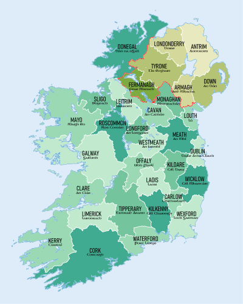

Now, I am a graduate student in UCD. As a international student in Ireland, I want to share with you my experiences studing in UCD and my life in Ireland.
I am so proud that I can study in UCD. My major is Computer Science (Conversion) since I am interested in computer and my background is not computer. To be honest, the modules in this course are relatively challenge for me. Thankfully, there is IT Center who can provide any kind of support on computer, and at the same time, the professors are very nice. Except for those, there are libraries, life-long learing centre, UCD research and innovation centre and applied language centre etc.
If you want to know more, the following links will be helpful.
If you have the newest map or a map with more details, please Contact me !
Here are some videos about Ireland introduction, travelling and living in Ireland.
